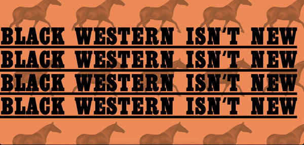
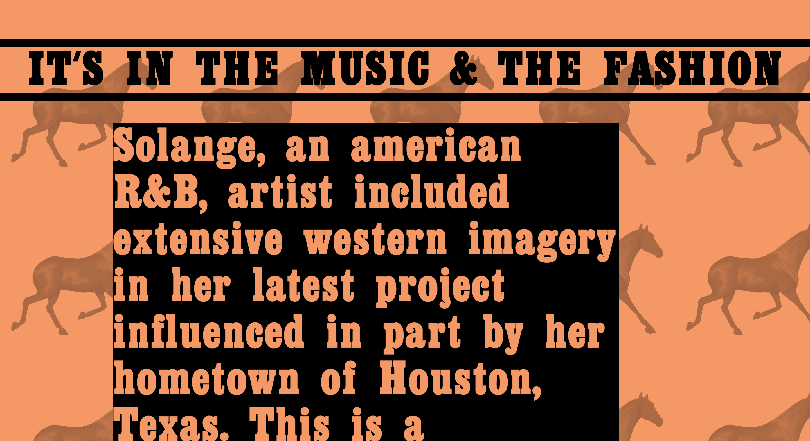
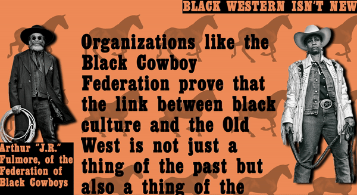

Exploring The Influence of Old Western Themes on Black Popular Culture


The project was an interactive visual exploration of old western influenced black imagery in the form of a webpage. The goal was to highlight the role of Black people in interactions with these themes and acknowledge their erasure in previous conversations.
The project incorporated found historical and pop culture images and videos depicting Black people's interactions with the Old West over time. The project also included original collages and copy.


The site was an exercise in developing unique mixed media content and planning a site from sketch to build.
A link to the working site can be found here.